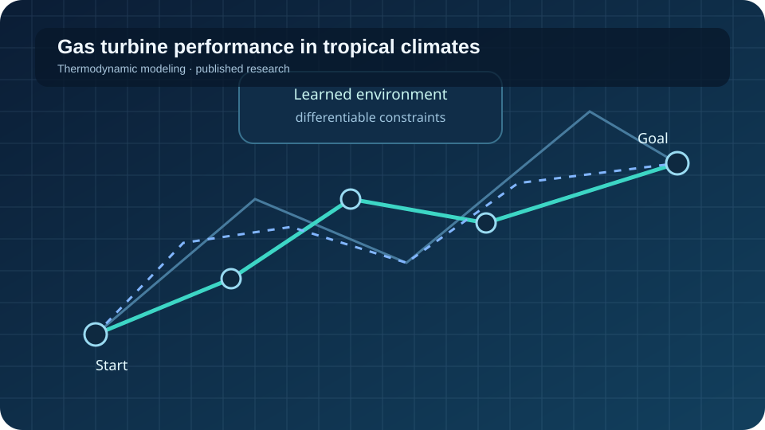

Enhancing Gas Turbine Power Plant Performance in Tropical Climates by Using Inlet Air Cooling with Desiccant Dehumidification and Evaporative Cooling
This study investigated an inlet-air-cooling approach combining evaporative cooling, a desiccant wheel, and a Maisotsenko cooler. Aspen HYSYS and MATLAB models indicated that the system could reduce compressor inlet temperature by an average of 11.5 °C and improve peak-condition power output by more than 2 MW, with an estimated cooling-system power requirement of about 0.9 MW.